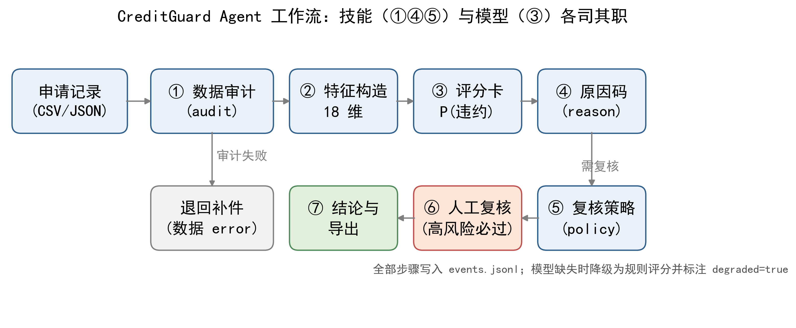
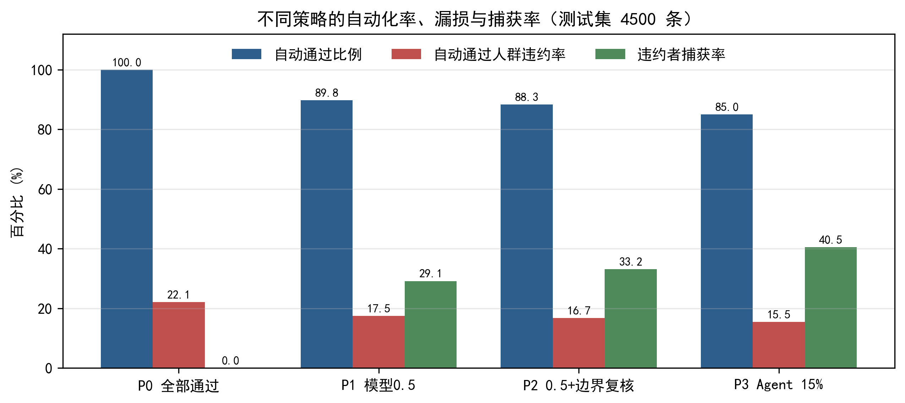
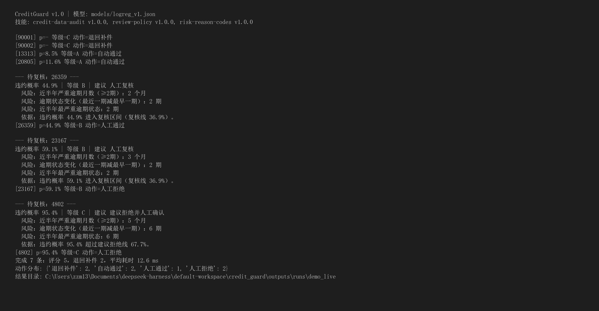
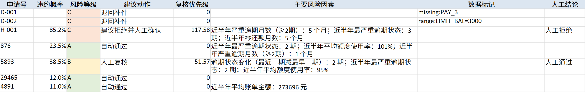

它解决什么问题
复核员只看分数
不知道哪几项指标把风险推高，只能逐单翻账单。
不知道哪几项指标把风险推高，只能逐单翻账单。
0.5 阈值误伤好客户
为了多抓违约，把约 4.85% 的好客户一起拒掉。
为了多抓违约，把约 4.85% 的好客户一起拒掉。
脏数据静默进模型
年龄 15 岁、额度 3000 元也能得到一个"正常"分数。
年龄 15 岁、额度 3000 元也能得到一个"正常"分数。
CreditGuard 把流程改成：数据审计 → 评分 → 原因码 → 分级建议 → 人工确认 → 导出留痕。任何"建议拒绝"都必须由人签署，系统不会自动拒贷。
工作流

技能负责判断，模型负责概率，Agent 负责编排与留痕；全部步骤写入 events.jsonl
实测结果（测试集 4500 条）
| 策略 | 自动通过 | 自动通过人群违约率 | 违约者捕获率 | 好客户被拒 |
|---|---|---|---|---|
| P0 全部通过 | 100% | 22.1% | 0% | 0% |
| P1 模型 0.5 阈值自动决策 | 89.8% | 17.5% | 29.1% | 4.85% |
| P2 0.5 + 边界复核 | 88.3% | 16.7% | 33.2% | 3.82% |
| P3 Agent 15% 分级 | 85.0% | 15.5% | 40.5% | 1.83% |

同样的复核产能下，自动通过人群违约率下降 6.6 个百分点，好客户误伤减少约 3 个百分点
怎么演示
① 命令行（无需训练）
git clone https://github.com/xiaohong156/028123264--.git cd 028123264-- pip install -r requirements.txt python scripts/demo_offline.py
输出复核摘要、Excel 清单与逐步审计日志。
② 网页原型
python web/server.py # 打开 http://127.0.0.1:8000
三种预设：低风险 / 高风险 / 脏数据，实时看到概率、原因码与建议动作；Codespaces 会自动转发端口。
运行记录

一次完整运行：脏数据退回、低风险自动通过、高风险转人工并给出原因码

导出给复核员的 Excel 清单：等级着色、原因码、人工结论，汇总页用公式
三个技能与复用
skillcredit-data-audit
评分前做数据闸门：缺字段/越界/未知编码 → error 退回、warn 强制人工。
评分前做数据闸门：缺字段/越界/未知编码 → error 退回、warn 强制人工。
skillrisk-reason-codes
把对数几率贡献翻译成 3 条风险因素与 2 条缓释因素，不输出通过/拒绝结论。
把对数几率贡献翻译成 3 条风险因素与 2 条缓释因素，不输出通过/拒绝结论。
skillreview-policy
按复核容量给 A/B/C 分级与建议动作；建议拒绝必须人工确认。
按复核容量给 A/B/C 分级与建议动作；建议拒绝必须人工确认。
复用了 anthropics/skills（Apache-2.0，commit 2c5958e）的 quick_validate.py 做技能规范校验，并修复了它在 Windows 中文环境下的编码问题；数据来自 UCI（CC BY 4.0）。
复现全部实验
python scripts/download_data.py # 下载 UCI 数据 python scripts/train.py # 训练评分卡 python scripts/evaluate.py --n 4500 # 基线与 Agent 对比 python -m pytest tests -q # 16 个单元测试 python tools/skill_lint.py # 技能规范校验